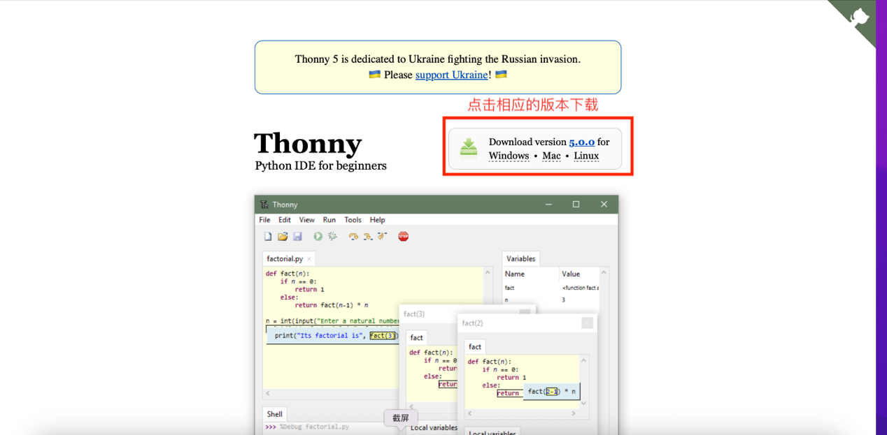

thonny.org 有 Mac 和 Windows 版
📚 想看完整介绍？沙坑 = 三大块：🐍 Python 编程（17 周） + 🤖 AI 通识 + 👀 C++ 认脸。详细参与者 / 目录 / 工具链 / 技术栈见 完整版 README（GitHub 链接）。https://github.com/Thawflow/sand-hollow（沙坑学习站 + 课程仓库）。让智能体（Agent）克隆到你的 home 目录，以后所有作业都写在这一个固定位置。macOS 用户：别放桌面——桌面有 macOS 隐私门卫（TCC）会拦 Thonny，还有 iCloud 同步捣乱。Windows / Linux 用户不受此影响。https://github.com/Thawflow/sand-hollow；②读 mentors-den/mentors-rules.md 上岗手册（智能体（Agent）能自动 review 你的作业）；③帮你创建学员目录（<你的学员ID>/homework/，ID 就是你注册沙坑用的 8 位数字）并把这个路径记到它的 MEMORY/USER，以后作业统一放这里。